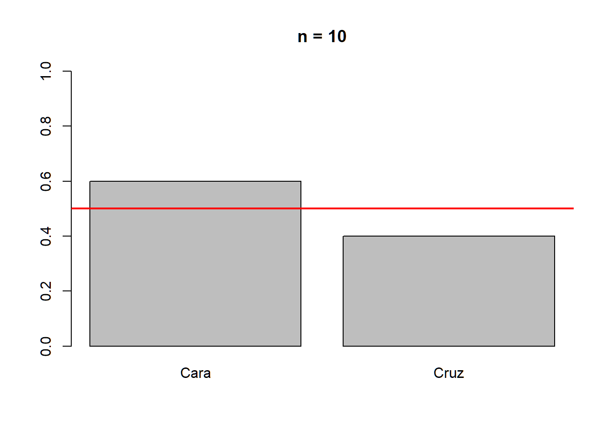
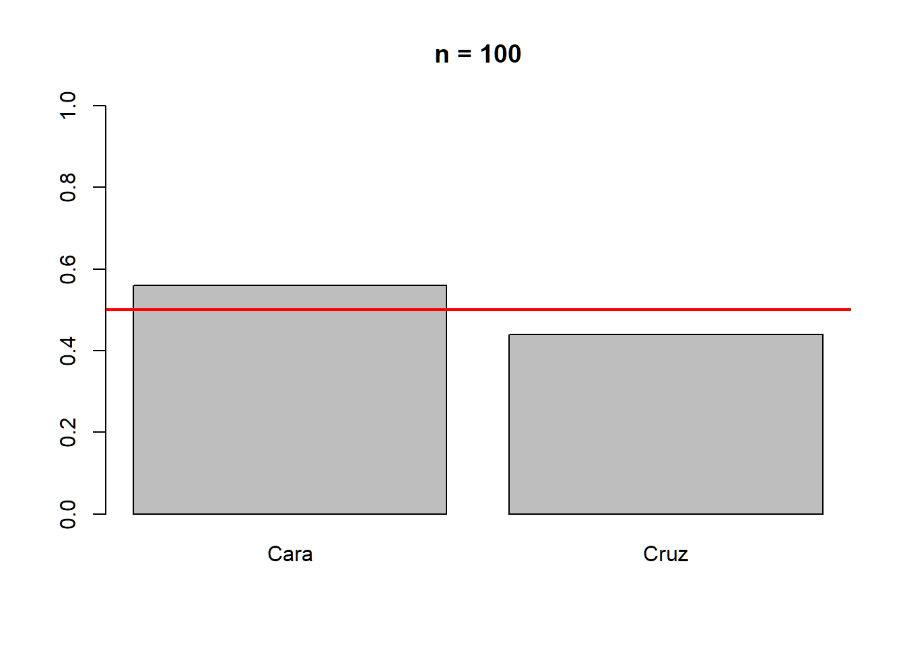

Objetivo: Aplicar los conocimientos sobre muestreo aleatorio para simular una variable dicotómica (dos resultados posibles) y observar la convergencia de frecuencias.
moneda(n) que simule el lanzamiento de una
moneda justa (dos caras posibles: “Cara” y “Cruz”) n veces.
Tu función debe:"Cara" y "Cruz".sample() con reemplazo
para realizar n lanzamientos.n.barplot).abline) en el valor \(0.5\) (la probabilidad teórica de cada
cara/cruz) usando color rojo.moneda <- function(n) {
resultados = c("Cara", "Cruz")
lanzamientos = sample(resultados, n, replace = TRUE)
frecuencias = table(lanzamientos) / n
barplot(frecuencias, main = paste("n =", n), ylim = c(0, 1))
abline(h = 0.5, col = "red", lwd = 2)
return(round(frecuencias, 3))
}
# Ejecución
moneda(10)
## lanzamientos
## Cara Cruz
## 0.6 0.4
## lanzamientos
## Cara Cruz
## 0.56 0.44Nota: Al ejecutar este ejercicio, notaremos que, con solo 10 lanzamientos, es muy probable obtener resultados lejanos al 50/50 (por ejemplo, 7 caras y 3 cruces). Con 100 lanzamientos, la distribución tiende a ser mucho más equilibrada, ilustrando de nuevo la Ley de los Grandes Números.